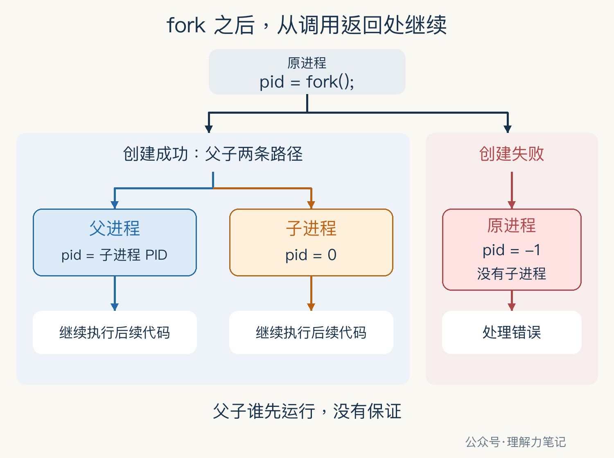

代码只调用了一次 fork()，后面的打印却执行了两遍。子进程是重新跑了一次 main，还是从中间接着跑？
fork 成功后，父子进程都从这次调用返回的位置继续执行。父进程得到子进程的 PID，子进程得到 0。失败时，原进程得到 -1，没有子进程产生。
PID 就是进程编号。本篇用一个单线程 C 程序，把“谁在执行”和“拿到了什么返回值”一起打印出来。fork 属于 POSIX 接口，ISO C 本身不规定它；Linux 支持这一接口。
这篇文章怎么读？
| 你想知道什么 | 看哪一章 | 会得到什么 |
|---|---|---|
| 后面的代码到底谁在执行 | 第一章 · 先解决问题 | 用 PID 和返回值认出父子进程 |
| 同一句调用为何有两条执行路径 | 第二章 · 机制解释 | 看清创建前后的执行位置 |
| 怎样写对父子分支 | 第三章 · 工程使用 | 失败处理、子进程退出与回收 |
| 面试怎样说明白 | 第四章 · 面试提炼 | 返回值与执行顺序的准确说法 |
实验先打印创建前的进程编号，再调用 fork。下面是 fork_demo.c 中的真实片段，完整程序还包含输出设置、退出和回收代码。
getpid() 取得当前正在执行的进程编号，pid 保存当前进程收到的 fork 返回值。打印前转为 long，与 %ld 匹配。
为避免标准 I/O 缓冲干扰观察，程序在第一次操作 stdout 之前，用 setvbuf(stdout, NULL, _IONBF, 0) 将其设为无缓冲，并检查设置结果。完整程序也检查每次打印是否成功。
本次实测环境为 macOS 14.8.8 x86_64、Apple clang 16.0.0。以下是 POSIX 示例的真实结果，未在 Linux 主机实测；接口结论同时核对了 POSIX 与 Linux 手册。
编译、运行配套的完整源文件：
一次实际输出如下，进程最终退出状态为 0：
创建前，进程编号是 35439。创建后，35439 仍是父进程，拿到返回值 35440；新进程 35440 拿到的返回值是 0。
子进程中的 0 是 fork 返回值，子进程自己的 PID 是 35440。把这两件事分开，父子分支就容易读了。
before 只执行一次，after 所在的代码则由父子进程各执行一次。本次输出恰好父进程在前。附带的 20 次运行也都观察到相同顺序，但这不能证明父进程总先运行；验证时只核对身份与返回值的对应关系，不要求两条 after 的顺序固定。无缓冲也不保证多进程打印的整行不会交错，本例的短行输出不应被当作通用日志同步方案。
可以把程序想成一份正在照着执行的操作清单。走到 fork 时，成功创建了另一位执行者；两人拿着同样的清单，从当前标记处往下做。先前已经做过的步骤，不会因为多了一位执行者再从头做一遍。
清单对应程序代码，执行者对应进程，当前标记对应执行位置。类比只帮助理解“从哪里继续”，进程的内存与文件资源如何继承，还需要分别讨论。
回到代码，pid_t pid = fork(); 包含调用和赋值。父子进程各自取得返回值、完成各自的赋值，然后继续判断 pid。所以，“继续执行”更准确地说是从调用返回处继续，不必机械理解成源文件的下一行。

父子执行的是同一份程序逻辑，但它们是不同的进程，各有进程身份和执行状态。if 负责根据各自的返回值选择分支，创建子进程这件事已经由 fork 完成。
成功路径上的两个进程可以独立运行。操作系统调度哪个进程先获得运行机会，会影响你看到的输出顺序。图中左右位置不表示先后；给其中一方加 sleep 也不能建立可靠的同步关系。
还有一个容易漏看的地方：父子分支结束后，如果双方都继续往下走，分支外的公共代码也会被双方执行。想让子进程到此结束，就必须给它明确的退出路径。
不要只把返回值当成真假来判断。-1 和正数在 C 的条件表达式里都是真，直接写 if (pid) 容易把创建失败混进父进程的正常路径。前面的示例先排除 -1，再处理 0，剩下的才是父进程路径。
fork 失败时读取 errno 才有意义，示例立即用 perror 输出原因。Linux 上进程数量限制可能导致 EAGAIN，内存不足可能导致 ENOMEM。不要看到失败就无间隔地重复创建。
打印完成后，示例先检查输出错误，再结束子进程：
这里的 _exit 结束当前子进程，不再继续执行后面的父进程逻辑，也不执行标准 I/O 的退出刷新。本例已经把 stdout 设成无缓冲；若改回缓冲输出，不能照搬“打印后直接 _exit”而不检查刷新。
父进程还要回收子进程。这个短函数只负责等待指定子进程，遇到信号中断 EINTR 时重试，其他错误交给调用者：
调用位置在子进程的 _exit 之后，只有父进程会到达：
先确认子进程正常结束，再读取退出码；不能直接把 status 当作退出码。即使父进程自己的打印失败，也会先走到等待回收，再报告失败。
这里假设没有其他代码抢先回收同一子进程，也没有把 SIGCHLD 显式设为忽略或开启自动回收。waitpid 放在父进程打印之后，因此只能保证成功返回时子进程已经结束，不能倒过来保证前面的父子打印顺序。
配套验证覆盖了普通文件重定向和输出失败，并用测试替身注入 fork 的 EAGAIN、waitpid 的 EINTR 与 ECHILD，确认失败返回、重试和错误传递。这些是故障注入，不是实际耗尽系统资源的结果。
本例限定单线程程序。多线程程序调用 fork 后，子进程在成功执行 exec 前只能执行异步信号安全操作，也就是规范明确允许在这类受限上下文中使用的操作；printf 不在这个范围内，不能把本例直接搬过去。
“fork 调用一次、返回两次”描述的是成功情形：原来的父进程和新建的子进程，各自从调用处返回一次。失败时只有原进程返回 -1。
父进程的返回值是子进程 PID，便于随后指定等待对象；子进程得到 0，可以据此识别自己的执行分支，需要自己的 PID 时调用 getpid()。父子谁先运行没有保证，需要先后关系就使用明确的同步或等待机制。
fork 后的句柄协调及无缓冲流规则。本文为公众号「理解力笔记」原创。转载请联系作者，并保留出处。